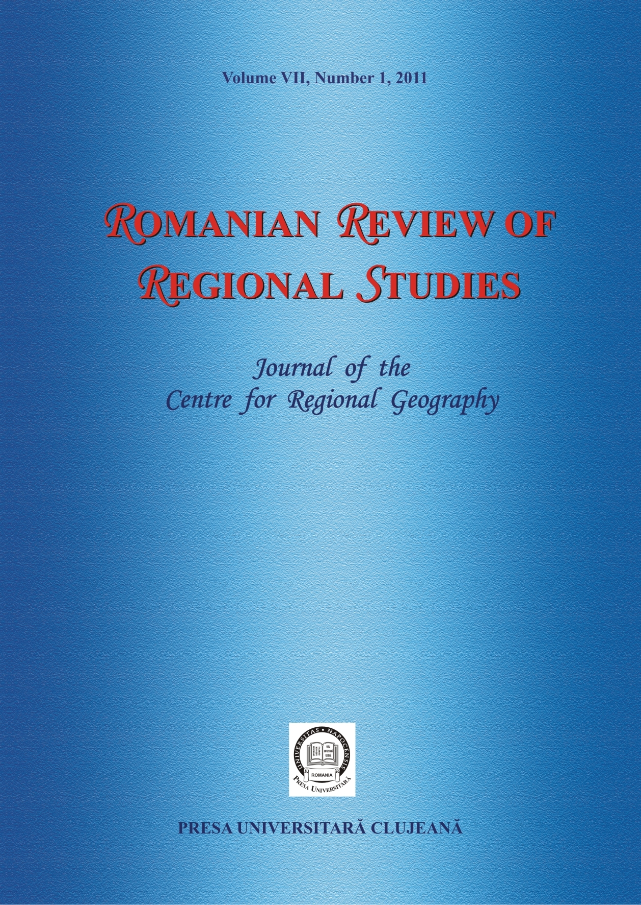

Volume VIII, Number 2, 2012
Urban Decline and Failed Reconversion Process: the Role of "Path Dependence" and Governance Theories in Local Actors' Strategies. The Case of Langreo (Spain)
JOSÉ PRADA TRIGO
Pages 3-14
[Full text]
ABSTRACT - During the sixties and the seventies, most of the European cities suffered an economic crisis and an urban restructuring process, particularly the traditional industrial cities and regions. These places suffered a deep slow-down in their growth and a decline process. In Spain, Asturias is one of the most affected regions by the crisis, and the Asturian cities specialized in the mining activity and the traditional industry (Avilés, Gijón, Langreo and Mieres) entered a process of decline in the sixties that in some cases continues today. In Langreo, the strong reindustrialisation policy developed by the local actors has not contributed to modify the image of “industrial city”. Today, the important presence of the industry in Langreo is paradoxical, when services are the economic driving force of the city and its principal source of employment. The lack of urban planning has given rise to a deteriorated urban landscape, where people do not wish to live today because of the proximity of industrial activities and the troubles that in some ways they cause. This paper analyses the unsuccessful process of urban and economic renovation as well as the current situation of Langreo. In order to do this, it uses a methodology that combines statistical information with interviews with local actors involved in the city’s development. The main results are: (i) A critical analysis of the situation of Langreo and its future perspectives, (ii) A summary of the contrast between the different models proposed by the local actors for the city and (iii) Some conclusions about the importance of executing an urban organization to fit the economic and employment parameters with the physical and territorial conditions of the city. Some issues like the different intensity in the implication of local agents, or the mechanism that govern the alliances between them also stand out.
Keywords: governance, path dependence, shrinking city, urban project, Spain
Analysis of the Last Decade’s Evolution of Competitiveness in Romania through Regional and Sectoral Lenses
BIBORKA-ESZTER BIRÓ, BORÓKA-JÚLIA BÍRÓ
Pages 15-28
[Full text]
ABSTRACT – The structure of labour productivity by regions and by economic activities as well as average sectoral income levels in Romania are analysed within the framework of this paper. The structure of labour productivity on regional level and by economic activities is an essential component of regional competitiveness besides the structure of regional population, the structure of employment by economic activities in total population at regional level and the structure of total GDP (or GVA) on regional level by economic activities. To capture the variation in time of competitiveness, a longer time horizon analysis of the above indicators is needed instead of analysing just one-year data, which would only give a static view on the matter. Our analysis covers the 2000-2008 time horizon and focuses mainly on labour productivity through analysing sectoral GVA and sectoral employment on the level of Romanian NUTS2 development regions, being an important determinant of regional competitiveness.
Keywords: competitiveness, NUTS2 regions, sectors, GVA, income, employment
An Analysis on Religious-Ethnic Geopolitics, Security and Development in Border Towns. Case Study: Sistan and Baluchestan
ISSA EBRAHIMZADEH, AHMAD SAHRAEI
Pages 29-40
[Full text]
ABSTRACT – Borders and border areas require security measures, which are very important to create security on the borders. The paper also analyzes the role of ethnic groups living near borderlines. Iran is an ethnically varied country and distinguishing characteristics of ethnic groups from each other in Iran is particularly concentrated on language, religion and ethnic components. These ethnic groups have been scattered as certain minority groups in border provinces and areas. The presence of Iranian nationals in the Western, Eastern and Northern borders which are contiguous with countries with the same religion and language creates by itself an appropriate context for the occurrence of ethnic crises in border areas and boundary underdevelopment is an another cause for this problem. In addition, the three components, namely religion, ethnicity, and language, should be taken into consideration in adopting policies and strategies to deal with these areas. In Sistan and Baluchestan, Iran, there are effective national strategies taking advantage of the presence and existence of religious and ethnic groups in the border towns, adopting security and development policies taking into account these two issues. They have a deep effect on regional development and national solidarity due to construction activities and infrastructure investments on the one hand and reducing insecurity and trafficking on the other hand.
Keywords: ethnic geopolitics, security and development, border towns, Sistani and Baluch tribes
Demographic Processes in the Southern Part of the Hungarian – Romanian Border
EGON NAGY
Pages 41-50
[Full text]
ABSTRACT - This paper is a demographic comparative study of two neighboring regions along the southern part of the Romanian-Hungarian border region, which serves as a fundament for further analyses concerning the verification of cohesion between the two parts of the border. We have concluded our study with the statement that in spite of its traditionally low population increase, the Romanian Timiş and Arad counties have a more advantageous demographical condition than the neighboring Hungarian Békés and Csongrád counties, which can be described as having a generalized demographical decline. Though in Romania the Banat region for many decades is classified as a crisis-zone from a demographical point of view, it can show off an impressive attractiveness in terms of inner-migration in contrast to its Hungarian neighbors. In contrast with the northern part of the Romanian-Hungarian border, in this region the border strip does not overlap with a socio-economic periphery, because this phenomenon is more scattered in space.
Keywords: Romanian-Hungarian border region, demographic periphery, territorial cohesion, social periphery
The Land of Beiuş (Romania) between Resilience and Regeneration. Post-Communist Challenges in Spatial Planning
LUMINIŢA FILIMON, VALENTIN NEMEŞ, PAUL OLĂU, CLAUDIU FILIMON
Pages 51-58
[Full text]
ABSTRACT – The territorial development of post-communist Romania claims the integration into the territorial planning process of some principles that regard a balanced and rightful evolution of the total components of this area. Territorially, the communist heritage is seen as a particular pattern of land use, in which gigantic economic structures, oriented towards heavy industry, dependent on one another and the collective habitat dominated the urban environment while intensively mechanized agriculture, opposing the traditional customs, was imposed in the rural areas. Mentally, this heritage is responsible for the development of resilience to some concepts such as free association, heritage nationalization and resource rationalization that raise suspicions due to their forced and wrong implementation into the recent past. If we add the limited experience of the administration, the incomplete legislative framework and the lack of specialists, one has an overall view of the issues of the East-European territories. All these issues raise a series of challenges whose answers seem to be linked to the integration of the sustainable development principle into the process that coordinates the territorial development. The “land” type areas are specific geographic regions of Romania with deep roots in the historical past of Romania and with features of regional mental areas. The identity marks of these areas are given by the high degree of ruralism, conservatism and the tradition, customs and traditional activities preservation. Once more, from post-communist transition to the rigours of joining the European Union, the course of these areas towards sustainable development must pass through the planning process. The Land of Beiuş is one of the 18 “land” type areas of Romania, located in Western Romania (at the foot of the Apuseni Mountains), identifying itself with the mental area polarized by the town of Beiuş. The total population is approximately 80,000 inhabitants. The aspects related to the resilience of this area are given by the rural component, extensive traditional agriculture and crafts, preservation of ethnic-folkloric traditions and the existence of some traditional areas, etc. Opposed to this, there are areas that underwent complex transformations due to the decline of the communist economic structures, which adapted themselves to the market economy and thus became global. In this regard, the Land of Beiuş integrates in the same territorial system both dynamic areas, with mutations of the traditional features, and resilient conservative areas. Thus, although the Land of Beiuş has no administrative significance, due to its mental area features it represents a living organism in the collective mentality of its inhabitants. The evident resilience of this type of area is completely unexploited, at least until now. The present study is suggesting the integration of these resilient features of this area into a strategy of sustainable local development where the regional peculiarities and the local identity should become landmarks.
Keywords: “ţara” (land), local identity, resilient areas, regeneration
Advocacy for the Romanian “Lands” as Project Territories
POMPEI COCEAN, LUMINIŢA FILIMON
Pages 59-66
[Full text]
ABSTRACT - The present study aims at becoming a manifesto in favour of the setting up of the “land”-type Romanian areas as project territories following an emergent sustainable spatial development. The “lands” are regional areas specific to Romania, with geo-historical peculiarities that enforce them as archetypal mental spaces of the Romanian people. Territorial cohesion, one of the distinctive particularities of the Romanian lands, is not valorised at all in the territorial development policies in Romania, although at European level it represents one of the objectives of regional policy. We consider that it is the duty of the regional geographers who studied these areas and worked out extremely valuable studies of territorial diagnosis to draw the attention of the practitioners dealing with territorial development on their usability. Thus, the main objective of this study is the scientific demonstration of the opportunity of such an approach, the theoretical support being given by the concepts of endogenous development, local development, “land”, mental space, project territory. In order to achieve this aim we started from bringing arguments for the role of regional geography and of the geographers themselves in the support and scientific validation of the territorial development, followed by demonstrating the distinctiveness of the Romanian lands and the opportunity of turning them into project territories, by comprising the aforementioned theoretical concepts. Last, but not least, we analysed France's expertise which provided the legal framework for the establishment of the “pays”-type areas as project territories and which, we believe, is worth being considered also in the case of the Romanian lands.
Keywords: local development, territorial coherence, project territories, “land” type areas
Geodemography of Health Care Services in the Budding Tourism Destinations of Rapidly Urbanising Cross River State, South-East Nigeria
JOSEPH K. UKWAYI, RICHARD INGWE, FELIX E. OJONG
Pages 67-86
[Full text]
ABSTRACT - Although the extent to which human capital, economic policies and physical infrastructure contribute towards economic development continues to generate intense debate in development studies, there is a consensus that the human capital and the factors (including health care) that it (human capital) plays very significant roles in achieving sustainable development including economic, social and environmental aspects. Sadly, health care quality, as one of the essential components of life quality of most urban centres in developing countries (DCs), remains largely unknown. This paper analyses healthcare (including health institutions and professionals) available in Calabar city in southeastern Nigeria. Despite the recent emphasis of Cross River State Government on developing the local-regional and global preferred tourism destination in Calabar city, for over a decade (since 1999 to the present) as frequently and fondly advertised in the global media, the policy of health care improvement, as well as other welfare programmes, have lagged behind the efforts to invite tourists into the city. To increase the attractiveness of the city for residents, tourists and investors, policy must incorporate health care improvement programmes into economic growth and development plans.
Keywords: developing countries, Calabar, Cross River State, tourism, health care
The Ecological Impact of Tourist Activities in the Ialomiţa Subcarpathians (Romania)
RĂDIŢA ALEXE, ANDRA COSTACHE
Pages 87-92
[Full text]
ABSTRACT - The analyzed region is situated in between the mountains and the plain and represents an area that is perfectly integrated in the natural and human landscape of the Romanian Subcarpathians. Relying on surveys out in the field and on questionnaires, our study has examined the ecological impact of the tourist activities in the tourist resorts of the Ialomiţa Subcarpathians. We have analyzed, as indicators, the production of domestic waste and the water consumption in the tourist activity, compared to the quantities produced on a local level. It can be noticed that the impact of the tourist activities on the environment is low, both in the case of the production of domestic waste and as far as the water consumption is concerned. It has been noticed that some tourist pensions with their own water supply and sewerage systems have a major effect on the environment when the environmental protection norms are not respected. The questionnaires filled in both by the local authorities and by the host communities show that they consider the tourists to be less responsible for the environmental condition than the local population.
Keywords: domestic waste, environmental condition, tourist activity, water consumption
Views on the Anisotropic Nature of Ilva Valley Region
GABRIELA-ALINA MUREŞAN, MĂRIOARA PALAGICA CONSTANTIN
Pages 93-98
[Full text]
ABSTRACT – There are two concepts important for the authors of this article: anisotropic region and anisotropic space. Anisotropic region is defined by A. Dauphiné, the geographer (-mathematician), as a territorial unit whose structure results from the organisation of space along one or more axes. From the point of view of a territorial system, this type of region has some characteristics which differentiate it both from the homogeneous region and from the polarised one. These specificities have been analysed for Ilva Valley. The region of Ilva Valley is formed along the morphological axis represented by the Ilva River. The aim is to identify these specificities or their absence within this region. In this way we can determine whether this region is an anisotropic one or just an anisotropic space, namely whether it can be considered as evolving towards an anisotropic region, not yet complying with all characteristics of anisotropic regions.
Keywords: anisotropic region, anisotropic space, structuring axis, mass and energy flows, self-regulated territorial system, polarised subsystems
Premises for Shaping Metropolitan Areas in Romania
RAULARIAN RUSU, CIPRIAN MOLDOVAN, DĂNUŢ PETREA
Pages 99-108
[Full text]
ABSTRACT - The setting up of metropolitan areas is a process which is still in progress in Romania. The legislative framework for the creation of these areas has been built up only since 2001, and there are still a number of juridical inconsistencies concerning the association of administrative units to form metropolitan areas. On the other hand, political reasons and the fear of losing a certain degree of authority and to become subordinates of the large cities (in the case of rural municipalities) also hindered the development of metropolitan areas in Romania. Nevertheless, the metropolitan areas already in existence are running a number of projects that are beneficial for most members of the association. Such positive examples may trigger the creation of the other metropolitan areas. Although the existing metropolitan areas did not yield spectacular results, the time passed since their foundation is yet too short to correctly assess their usefulness and territorial meaning. For the moment, the following metropolitan areas exist in Romania: Iaşi, Oradea, Braşov, Constanţa, Bacău, Cluj-Napoca, Târgu Mureş and Craiova. Bucharest, Timişoara, Ploieşti and Galaţi-Brăila metropolitan areas are still in process of setting up.
Keywords: metropolitan areas, Romania, cities, urban areas, urban cores
Quality of Life Assessment in Urban Environment Using a Geographical Informational System Model. Case Study: Brăila City
MARIA IOANA VLAD ŞANDRU
Pages 109-118
[Full text]
ABSTRACT – The study on the quality of life ( QoL) in urban areas is gaining interest from a variety of disciplines such as planning, geography, sociology, economics, psychology, political science, marketing, and is becoming an important tool for urban planning and management. At present, there is a great deal of ambiguity and controversy on the concept of QoL, its elements and indicators. Thus, the present paper focuses on the development of a methodology for assessing quality of life in urban environment implementing a geographical informational system model that includes data from different areas of analysis, as follows: geographical data, Urban Audit socio-economic data, Urban Atlas data, satellite image data, survey data and indicators. The Geographic Information model derived from correlating the data mentioned above is used for evaluating the quality of life in Brăila, a 200,000 people city, situated in eastern Romania and port on the Danube River.
Keywords: satellite data, Urban Audit, indicator, Urban Atlas

ABOUT THE JOURNAL
ISSN-L: 1841-1576
Online ISSN: 2344-3707
Edited by: CENTRE FOR REGIONAL GEOGRAPHY
Published by: PRESA UNIVERSITARĂ CLUJEANĂ (CLUJ UNIVERSITY PRESS)
Frequency: Semiannual (issued in June and December)

This work is licensed under a Creative Commons Attribution 4.0 International License.